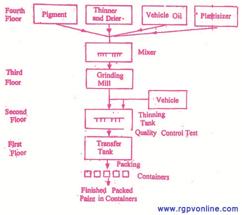

Q.31 : पेन्ट निर्माण का रेखाचित्र बनाइए।
उत्तर - पेन्ट मुख्यतः ठोस अवयवों से मिलकर बना होता है जिन्हें रंजक (dye) कहते हैं। पेन्ट एक या अधिक रंजकों का किसी माध्यम में यांत्रिक परिक्षेपण मिश्रण होता है अर्थात् पेन्ट एक द्रव है जो न बहने वाले पदार्थ का बना होता है।
पेन्ट के अवयव (Ingredients of Paint) – पेन्ट के निर्माण में मुख्यतः निम्नलिखित पदार्थ काम में आते हैं-
(i) रंजक (Dye)- रंजक में ठोस कण होते हैं तथा ये विशेष माध्यम में निलम्बित रहते हैं, प्राथमिक रूप से ये पेन्ट को रंग तथा अपारदर्शिता (opacity) प्रदान करते हैं। रंजक मुख्यतः निम्नलिखित प्रकार के होते हैं -
(अ) सफेद रंजक- सफेदा, 2PbCO3.Pb(OH)2,
(ब) रंगीन रंजक - ये निम्नलिखित प्रकार के होते हैं –
(क) काला रंजक - कार्बन ब्लैक,
(ख) नीला रंजक - प्रशियन ब्लू, कोबाल्ट ब्लू अल्ट्रामेरियन ब्लू,
(ग) लाल रंजक - सिंदूर (Pb3O4), क्रोम रेड,
(घ) पीला - क्रोम येलो, जिंक क्रोमेट, लिथार्ज,
(ङ) हरा - क्रोमियम ऑक्साइड, क्रोम ग्रीन,
(च) भूरा - वर्नट सिएना।
रंजक ठोस पदार्थ होता है तथा यह पेन्ट का आवश्यक अवयव है। इसके कार्य निम्नलिखित हैं -
(अ) यह पेन्ट को शक्ति तथा क्षमता प्रदान करता है।
(ब) यह पेन्ट को वांछित रंग प्रदान करता है।
(स) यह पेन्ट को हानिकारक पराबैंगनी किरणों से बचाता है।
(द) यह पेन्ट की परत को नमी के प्रति अप्रवेश्य बनाता है।
(इ) यह पेन्ट को क्षरण के प्रति अवरोध प्रदान करता है।
(फ) यह मौसम के प्रति प्रतिरोधक क्षमता प्रदान करता है।
(ii) शुष्कन तेल (Drying Oil) - ये पेन्ट की परत बनाने वाले अवयव हैं। ये सामान्यतः जन्तु एवं वनस्पति तेलों में उपस्थित उच्च अणु भार वाले ग्लिसरॉल के एस्टर होते हैं। स्टिऐरिक अम्ल, ओलीक अम्ल, लिनोलिक अम्ल आदि प्रमुख ग्लिसराइड बनाने वाले अम्ल हैं। इनकी संरचना को नीचे दर्शाया गया है -
CH2COOR
|
CHCOOR
|
CH2COOR
यहाँ R = C15,H31, C17H35, C17H33, C17H31 आदि। शुष्कन तेल पेन्ट.को दृढ़ता, स्थायित्व, जलरोधी गुण, विशेष माध्यम प्रदान करते हैं।
(iii) तनुकारक (Thinners)- ये पेन्ट में श्यानता कम करने के लिए मिलाये जाते हैं ताकि पेन्ते का गाढ़ापन उपयुक्त स्तर का बन सके। ये पृष्ठ पर उपस्थित छिद्रों में पेन्ट को प्रवेश करने में मदद करते हैं। सामान्यतः तनुकारक के रूप में टर्पेन्टाइन, बैंजीन, डाइपेन्टीन, केरोसीन, मिथाइलीकृत नैफ्थेलीन उपयोग किये जाते हैं।
(iv) शुष्कक (Driers)- ये ऑक्सीजन वाहक उत्प्रेरक पदार्थ हैं। ये तेल की परत का शुष्कन, ऑक्सीकरण, बहुलीकरण, संघनन आदि के द्वारा करते हैं। महत्वपूर्ण शुष्कक पदार्थ Co, Mn, Pb तथा Zn के नैफ्थेलनेट, टंगस्टेट, लिनोलेट तथा रेसिनेट हैं।
(v) फिलर (Fillers)- ये कम अपवर्तनांक वाले पदार्थ हैं। इनसे पेन्ट का स्थायित्व बढ़ता है परन्तु लागत कम हो जाती है। ये पेन्ट की ढकने की क्षमता बहुत कम कर देते हैं। सरल शब्दों में, गाढ़े पेन्ट को तरल बनाने के लिए ये पदार्थ प्रयुक्त किये जाते हैं। महत्वपूर्ण फिलर BaSO4, बारीक सिलिका, जिप्सम, CaSO4 इत्यादि हैं।
(vi) प्लास्टीसाइजर (Plasticizers)- कभी-कभी पेन्ट में तन्यता तथा टूटन (cracking) कम करने के लिए प्लास्टीसाइजर पदार्थ मिलाये जाते हैं।
अच्छे पेन्ट की विशेषताएँ - एक अच्छे पेन्ट में निम्नलिखित विशेषताएँ होनी चाहिए -
(i), सुरक्षात्मक परत पर पर्याप्त रूप से सरलतापूर्वक फैलने वाला तरल होना चाहिए।
(ii) इसमें उच्च सुरक्षात्मक शक्ति होनी चाहिए।
(iii) इसे बिल्कुल दृढ़, एकसार (uniform) चिपकने वाली तथा अप्रवेश्य (impervious) परत बनाना चाहिए।
(iv) सूखने पर परत को चटकना नहीं चाहिए।
(v) वातावरण के संक्षारण से पेन्ट के पृष्ठ को सुरक्षित रखना चाहिए।
(vi) इसकी परत धोने योग्य होनी चाहिए।
(vii) इसमें चिपकने का गुण अत्यधिक होना चाहिए।
(vii) इसकी निर्मित सतह चमकदार होनी चाहिए।
पेन्ट का निर्माण- पेन्ट के निर्माण के लिए सामान्यतः चार मंजिल भवन का उपयोग किया जाता है जिससे वहाँ पदार्थों का गुरुत्वाकर्षण प्रवाह बना रहे । चौथी मंजिल पर जिंक, तेल, थिनर, प्लास्टीसाइजर शुष्कन आदि का संग्रह किया जाता है।
इन सभी कच्चे पदार्थों को उचित अनुपात में मिलाकर तीसरी मंजिल में लगे ग्राइण्डिंग मिल में डाल दिया जाता है। यहाँ पर इन सबको पीसा जाता है। इसके बाद इन्हें दूसरी मंजिल पर रखे संग्राहक टैंक में भेजा जाता है। इन टैंकों में प्रक्षोभन (agitation) या विलोडन का प्रक्रम रहता है। यहाँ पर वांछित मात्रा में माध्यम मिलाया जाता है जिससे आवश्यक संघटन प्राप्त हो सके। उसके बाद बैच का परीक्षण, गुणवत्ता नियंत्रण (quality control) के लिए किया आता है। यहाँ बैच परीक्षण; गुणवत्ता नियंत्रण से गुजरता है। पेन्ट पदार्थ को छानकर पहली मंजिल पर भेज दिया जाता है यहाँ पर इसे पात्रों में भर दिया जाता है। अन्त में पात्रों (containers) में भरे पदार्थ को निचली मंजिल पर भेज देते हैं।

फ्लो चार्ट 11.1 पेन्ट निर्माण का रेखाचित्र
पेन्ट के उपयोग - पेन्ट के निम्नलिखित उपयोग हैं -
(i) इनेमल पेन्ट का उपयोग सामान्य कार्यों के लिए किया जाता है क्योंकि यह पेन्ट वायु में सूखने वाला होता है।
(ii) सामान्य लकड़ी की सतहों के लिए तेल पेन्ट का उपयोग करते हैं।
(iii) रिंकल फिनिश पेन्ट, धातु चादर सतहों तथा उपकरणों आदि के लिए उपयोग में लाए जाते हैं।
(iv) हैमर- टोन फिनिश पेन्ट का उपयोग अलमारी, मेज, तनाव परीक्षण मशीन का कवर
आदिको पेन्ट करने के लिए किया जाता है।
(v) कार, स्कूटर आदि को पेन्ट करने के लिए नाइट्रोसेलुलोस पेन्ट का उपयोग किया जाता है क्योंकि यह वायु में शीघ्र सूखने वाला होता है।
(vi) स्टील, फर्नीचर तथा रेफ्रिजरेटरों को पेन्ट करने के लिए स्टोव पेन्ट का उपयोग किया जाता है।